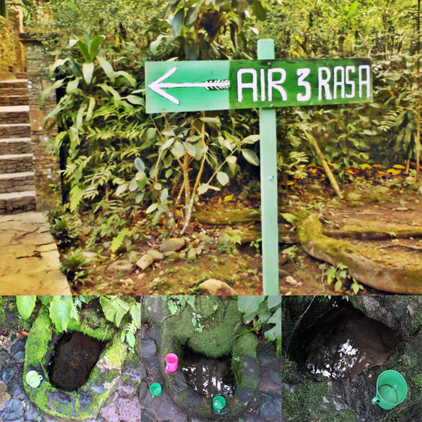

Air tiga rasa dari gunung muria
Pemandangan yang menarik memang menjadi salah satu daya tarik para wisatawan berkunjung ke tempat wisata Gunung Muria. Tak hanya itu, keberadaan Sunan Muria sebagai penyebar Islam di daerah tersebut telah menjadikan daerah yang terletak di perbatasan Kabupaten Kudus, Jepara dan Pati itu mempunyai banyak kisah dan peninggalan more...